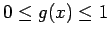
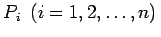

Inhalt Index DeskTop Bronstein

 Wahrscheinlichkeitsrechnung und Mathematische Statistik Mathematische Statistik Monte-Carlo-Methode Beispiel für eine Monte-Carlo-Simulation
Wahrscheinlichkeitsrechnung und Mathematische Statistik Mathematische Statistik Monte-Carlo-Methode Beispiel für eine Monte-Carlo-Simulation


Es soll angenommen werden, daß  gilt. Dies läßt sich durch die Transformation (16.180) stets erreichen. Dann gibt das Integral I den Inhalt einer Fläche an, die ganz im Einheitsquadrat E liegt (s. Abbildung).
Von einer Folge gleichverteilter Zufallszahlen aus dem Intervall [0,1] faßt man je zwei zu den Koordinaten eines Punktes des Einheitsquadrates E zusammen und erzeugt auf diese Weise n Punkte . Bezeichnet man mit m die Anzahl der Punkte, die innerhalb oder auf dem Rand der Fläche A liegen, dann gilt unter Beachtung des Begriffes der relativen Häufigkeit:
Um mit Hilfe von (16.176) eine bestimmte Genauigkeit zu erreichen, ist eine sehr große Anzahl von Zufahlszahlen notwendig. Deshalb hat man nach Möglichkeiten zur Erhöhung der Effektivität gesucht. Eine davon stellt die folgende Monte-Carlo-Methode dar, weitere findet man in Lit. 16.19.